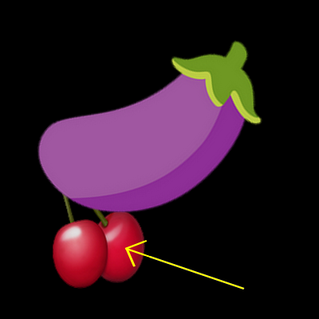
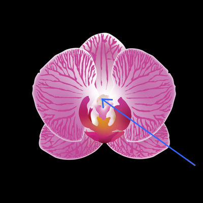
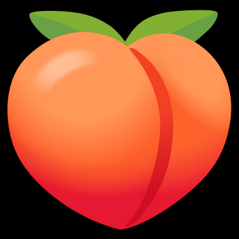

Question





Bravo !
Dommage :(
Les testicules (testes) sont les gonades mâles des animaux.
Ils appartiennent à l'appareil reproducteur masculin, ce sont les homologues des ovaires.
Ils ont une double fonction, plus ou moins exprimée selon les périodes de la vie :
En effet, l'organe érectile de l'appareil génital féminin externe,
principalement composé de deux bulbes bordant la vulve et d'un gland (ou clitoris au sens
strict),
situé au-dessus de l'orifice urétral.
On dit aussi organe bulbo-clitoridien.
(Très sensible, le clitoris participe au plaisir sexuel féminin.)
Et oui, chez l'être humain, l'anus se situe au niveau du périnée,
en arrière de la partie inférieure des organes génitaux externes,
c'est-à-dire la base du pénis chez l'homme et la vulve chez la femme.
L'anus est l'orifice externe du canal anal. Sa paroi est constituée de peau.
Sa vascularisation est assurée par les artères rectales inférieures et les veines rectales
inférieures.
Son innervation est assurée par les nerfs rectaux inférieurs.